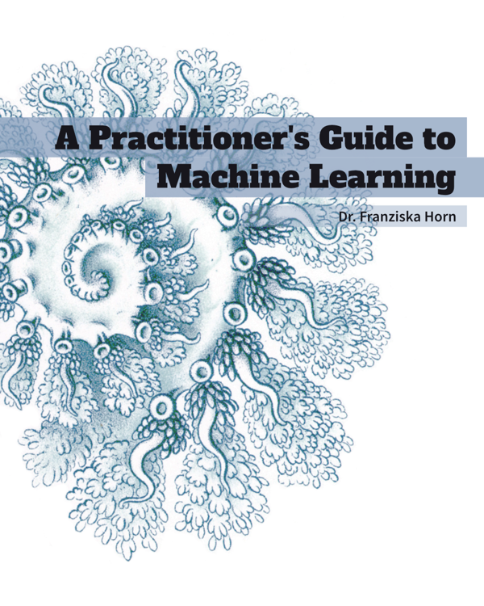
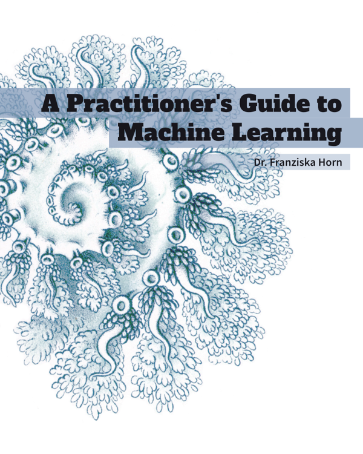

Resources
Here you can find some free resources to improve your programming and data science skills.
Books
I am the author of two free online books on software engineering and machine learning (ML): 

Clarity-Driven Development of Scientific Software is meant to empower researchers to code with confidence and clarity. Since in the natural sciences programming is still not taught extensively at university, researchers often find themselves having to do a lot more software development in their day to day jobs than their academic journey prepared them for. This book is here to help them write code they are proud to share and that paves the way to bring their research into production. The book approaches software design from first principles and brings a product mindset to the research process.
The book is also available for purchase in PDF and EPUB formats from Leanpub.
A Practitioner's Guide to Machine Learning explains which use cases are best tackled with ML, gives an intuition for how the different algorithms work, and shows you how to arrive at a working solution while avoiding common pitfalls. The book is accompanied by a set of programming exercises (incl. a cheat sheet) and my Data Product Canvas and ML Project Assessment.
Slides from Talks
Refactoring Socio-Technical Systems: When your organizational structure and software architecture don't support the value your product is meant to deliver, getting things done becomes harder than it should be. This talk explores how to realign teams, code, and processes to cut inefficiencies—so you can spend less time in meetings and more time building products that truly meet your users’ needs.Tutorials & Courses
Software Engineering
In my Python tutorial you can learn the basics needed for data analysis and scientific computing in Python.
The course From Intent to Implementation extends these skills by diving deeper into the clarity-driven development framework (aimed at students working on a larger project or writing their thesis).
Machine Learning
Based on my ML book, I have devised several online course programs targeted at different audiences: